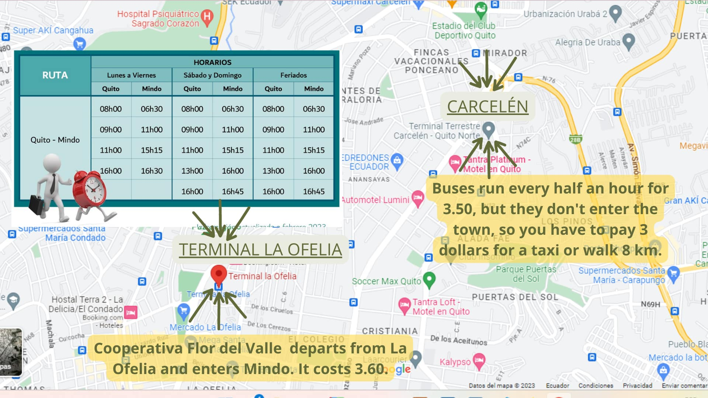
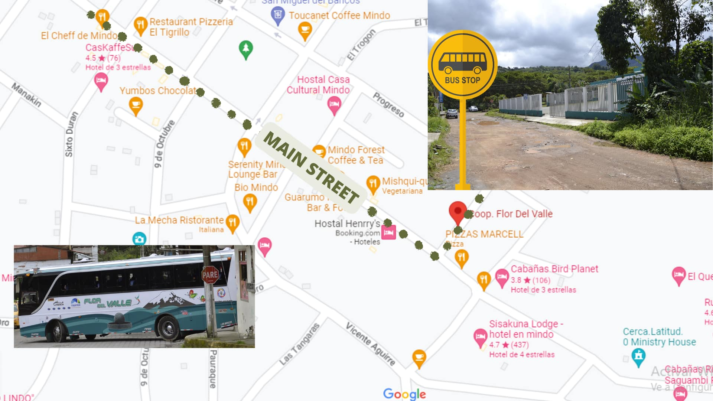

Explore the Untouched Beauty of Mindo, Ecuador: Your Ultimate Guide to a Hidden Paradise
Welcome to our blog about Mindo, Ecuador - a place where nature and adventure blend together to
create a magical
experience for all visitors. We created this blog to share our love for this hidden paradise with
tourists from all
over the world.
Mindo is a small town nestled in the cloud forests of Ecuador, located just a few hours away from
the bustling city
of Quito. The town is known for its rich biodiversity and eco-tourism, offering a range of
activities for nature
lovers, including bird watching, hiking, zip-lining, and much more. Mindo is home to over 500
species of birds,
making it one of the best bird-watching destinations in the world.
Whether you're a solo traveler, a group of friends, or a family looking for an adventure, Mindo has
something to
offer for everyone. Join us as we take you on a journey to explore the untouched beauty of Mindo,
Ecuador.
How to get to Mindo
Mindo is located in the Pichincha region of Ecuador. Here are some options to get to Mindo:
By car: If you are in Quito, you can take the Panamericana Norte highway towards Los Bancos,
and then continue on
towards Mindo. The trip takes approximately two and a half hours.
By public transportation: You can take a bus from the La Ofelia or Carcelén bus stations in
Quito.
However, please note that the only bus company that enters the town of Mindo is Cooperativa Flor de
Valle. The bus
departs from Ofelia station from Monday to Friday at 8am, 9am, 11am, and 4pm, and on Saturdays,
Sundays, and
holidays at 8am, 9am, 11am, 1pm, and 4pm. The trip takes around two hours. On the other hand, buses
from Carcelen do not enter the town, so you will need to take a taxi (which is always available) at
the town's entrance and pay 3 dollars to enter, or alternatively walk 8 kilometers.
By taxi: You can also hire a taxi in Quito to take you to Mindo. The price is negotiable, but
can vary between $40
and $60 USD depending on the distance.
Private tour: If you want a more personalized option, you can hire a private tour from Quito
that takes you to
Mindo. In this case, you can choose the itinerary and places you want to visit.
In summary, you can get to Mindo by car, public transportation, taxi, or private tour. Choose the
option that best
suits your needs and budget.

To get back to Quito
You can catch the bus at Flor del Valle Cooperative, which is two blocks away from the main square (picture below). On weekdays, the schedule is at 8am, 9am, 11am, and 4pm, and on Saturdays, Sundays, and holidays, it runs at 8am, 9am, 11am, 1pm, and 4pm. 